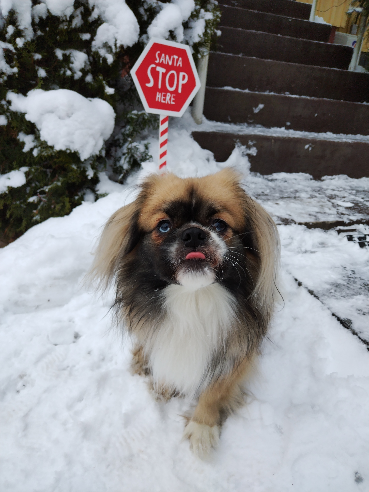

Tässä on ensimmäiset tekemäni nettisivut!

Olen Lotta, 21 vuotias ja asun Helsingin Hakaniemessä avomieheni kanssa.
Muutimme tänne heinäkuussa Nokialta, sillä lahjakkaalla muusikkokumppanillani on täällä päin enemmän töitä.
Itseäni kiinnostaa päästä tulevaisuudessa tekemään töitä pääasiassa etänä, siksikin tämä vaikuttaa hyvältä alalta.
Meillä on koira Pätkis joka arvostaa etäopiskeluani, kun se ei joudu olemaan päiviä yksin.
Olen isosta perheestä ja minulla on kaksi veljeä ja kaksi siskoa.
Lempivuodenaikani on talvi, ja tässä on mielestäni varsin hauska talvinen kuva.
Opiskelen tieto- ja viestintätekniikan perustutkintoa ja tavoitteenani on tähdätä ohjelmistokehittäjäksi. Olen innoissani koodaamisen oppimisesta, ja se kiinnostaa todella paljon.
Käyn pari kertaa viikossa uimassa kumppanini kanssa. Kesällä käyn suppailemassa. Sen lisäksi teen käsitöitä, tykkään erityisesti virkata ja seuraavaksi aloitan tekemään pipoa talveksi.
Koiran kanssa liikun paljon ja se on melkein kaikessa menossa mukana.

Työkokemusta olen ehtinyt kerryttää monesta paikasta. Olen pääasiassa työskennellyt asiakaspalveluhommissa, mutta ne alkoi puuduttaa ja tahdoin parempiin hommiin.
Suunnilleen vuoden vietin Ikealla jokapaikan osaajana. Olin ravintolassa kokkina, hodareita myymässä, logistiikassa ja kassalla. Parissa muussakin ravintolassa olen ollut tarjoilijan hommissa.
Puhelinasiakaspalvelijana Elisalla vietin puolisen vuotta, jonka jälkeen tein ajanvaraajan hommia. Siivousta- ja lapsenvahtikeikkojakin on tullut tehtyä.
Tämä on nyt ensimmäinen kunnollinen koodaus työnäytteeni, tästä on siis hyvä parantaa. Mutta harjoituksen vuoksi lisään tähän linkin tehtävään, jonka olen palauttanut Ossiin.